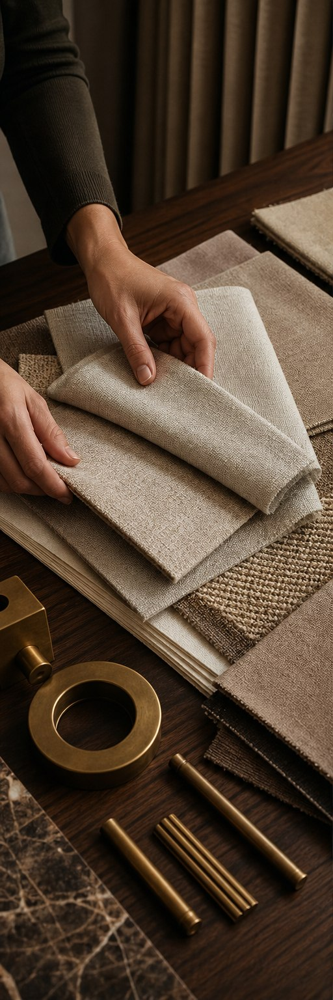
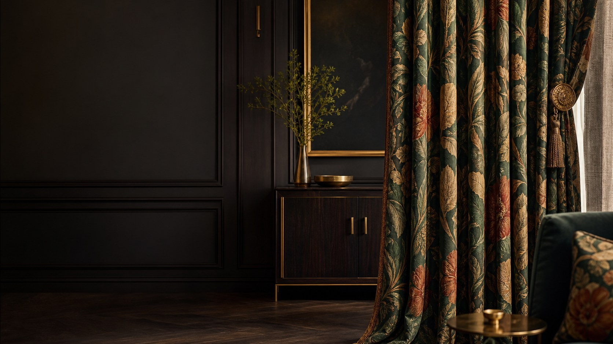

01 / Residential

Design-led window treatments
Dhanmondi homes are becoming more design-conscious, with apartments, renovated residences, and carefully planned living spaces where every interior detail matters. As a well-established residential and commercial neighborhood of Dhaka, Dhanmondi includes homes, offices, restaurants, and other lifestyle spaces where window treatments need to deliver both visual appeal and everyday functionality. A beautiful interior can still feel incomplete when the curtains do not complement the furniture, wall color, lighting, or proportions of the room.
The problem is that choosing a curtain from a catalogue alone does not guarantee the right result. Fabric weight, natural light, window size, privacy, curtain length, track position, and stitching all influence how the finished curtain looks. Curtain Canvas provides luxury curtains in Dhanmondi with a complete service—from consultation and fabric selection to precise measurement, custom tailoring, hardware selection, installation, and after-sales support.
Talk with our Curtain Expert
Planned around your space
Dhanmondi has a mix of residential and commercial properties, which means curtain requirements can vary significantly from one space to another. A family living room may need an elegant layered curtain that keeps the room bright during the day, while a bedroom may require stronger privacy and light control. Offices often need a cleaner, more professional finish, while restaurants and hospitality spaces depend heavily on atmosphere.
At Curtain Canvas, curtain planning can consider:
Explore the range
Curtain Canvas offers a carefully selected range of luxury curtains for homes and commercial spaces in Dhanmondi, with options for different interiors, levels of privacy, and lighting needs. Our collection includes decorative, functional, and customized window solutions designed to work with both contemporary and classic spaces.
Interior-based curtains do more than dress a window—they set the mood of the room. Designed to work with your interiors rather than compete with them, they bring light, texture, and flow into balance. Because when the curtains are right, your space doesn't just look finished—it feels alive.
01 / Residential

02 / Workspace

03 / Hospitality
Seasonal curtains are built around adaptability. Rather than one curtain doing an average job all year, seasonal curtains let you switch with the weather, the season's use, and the mood you're after. In Dhanmondi, that's not an indulgence—it's simply practical.
Every space is unique, and your curtains should reflect your style, dimensions, and functional needs. We create made-to-measure curtain solutions with premium fabrics, expert craftsmanship, and a flawless finish for every room.
Contact Us for CurtainComplete support
Curtain Canvas provides more than fabric and stitching. Our service covers the important stages required to turn a fabric selection into a properly fitted window solution.

Made to measure
Two windows of similar size can require completely different curtains depending on the room around them. Our custom curtain design service in Dhanmondi focuses on creating a solution specifically for your window and interior rather than forcing a standard ready-made option.
Residential and professional
A home curtain needs warmth and comfort, while an office usually needs a cleaner and more controlled appearance. Curtain Canvas can plan window treatments around the purpose and visual character of different residential and professional environments.
Hospitality interiors
For hotels, cafés, and restaurants, curtains contribute directly to the atmosphere customers experience. A thoughtfully selected curtain can soften a space, improve privacy, and support the visual identity of the interior.
For commercial projects, we also consider how the curtain will perform in a space that may experience frequent daily use.
From first visit to final fitting
A premium fabric needs equally careful measurement, stitching, and fitting. Curtain Canvas follows a structured process so each stage of the project connects smoothly from initial consultation to final installation.
Step 1: Consultation
We discuss your space, preferred design direction, functionality, privacy requirements, and expectations.
Step 2: Fabric and catalogue selection
Suitable fabrics, colors, textures, linings, and curtain styles are shortlisted for the project.
Step 3: Measurement
Window dimensions and relevant installation points are measured carefully for accurate production.
Step 4: Design confirmation
Curtain style, fabric, length, layering, hardware and finishing details are finalized.
Step 5: Custom production
The selected curtains are stitched and finished according to the approved measurements and specifications.
Step 6: Installation
Curtains, rods, tracks and applicable systems are professionally fitted and checked at the site.
Convenient from start to finish
The best luxury curtain is not always the most decorative or expensive option. It is the one that suits your window, solves practical requirements, and feels naturally connected to the rest of your interior.
Contact UsCommon questions
Useful next pages
Advice before you decide
Request catalogue delivery, measurement or a complete made-to-measure service.
Book for consultation